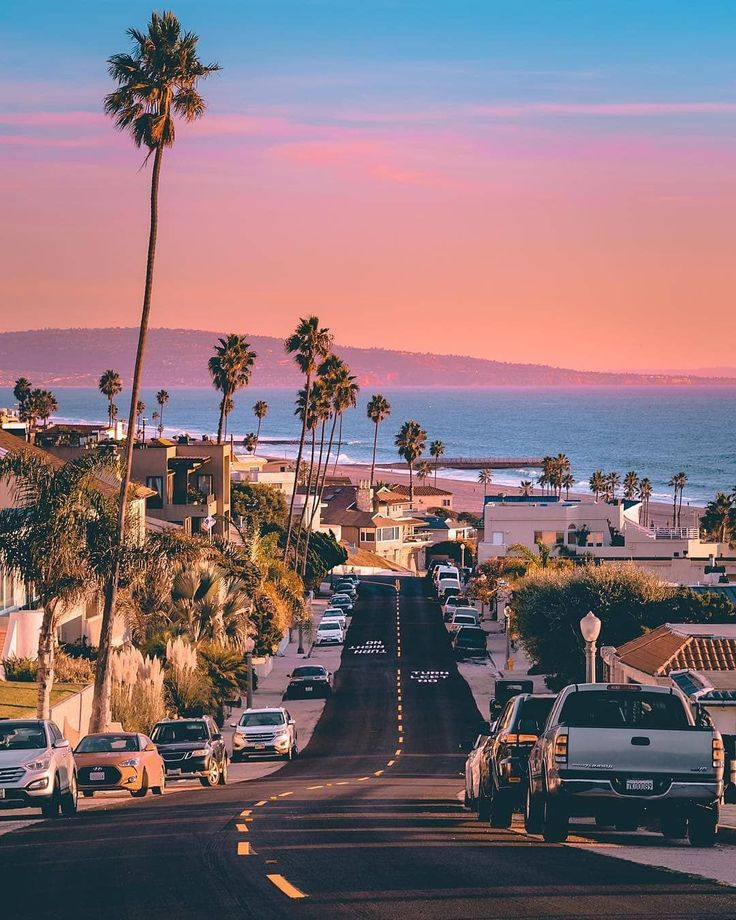
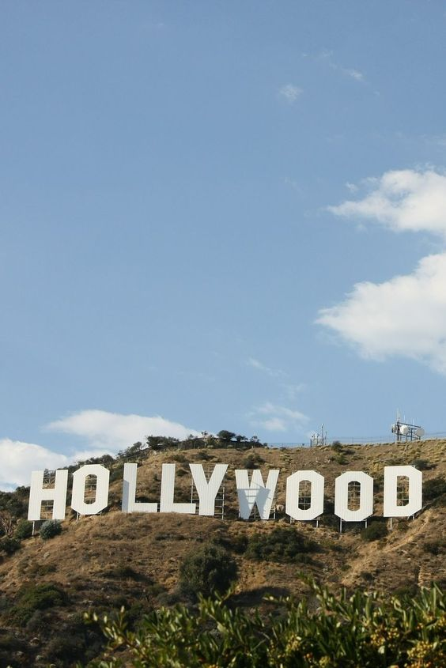
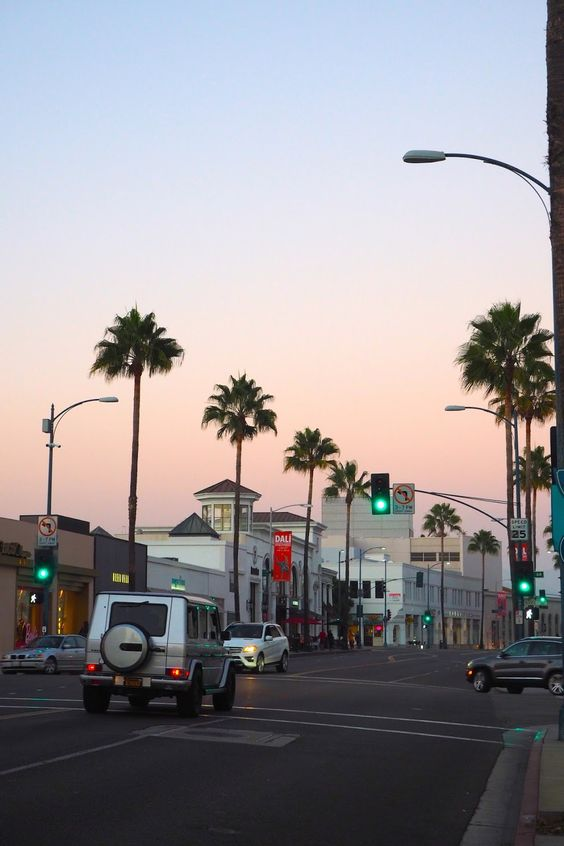

LOS ANGELES
Czwarty dzień mojej podróży rozpocząłem w Los Angeles. Po pełnym wrażeń dniu w Nowym Jorku, byłem podekscytowany możliwością zwiedzenia miasta, które tak często oglądałem w grach i filmach. Los Angeles było miejscem, o którym marzyłem od lat, zwłaszcza ze względu na moje zamiłowanie do gry GTA V i wirtualnego Los Santos, które tak dobrze odwzorowuje to miasto.
Od razu po przyjeździe postanowiłem odwiedzić Downtown Los Angeles. Spacerując po ulicach, poczułem się jak w samym sercu Los Santos. Wieżowce, szerokie aleje, neonowe światła - wszystko to przypominało mi wirtualne przygody. Przechadzając się po tych samych ulicach, które przemierzałem w grze, czułem się jak bohater Grand Theft Auto.
Wędrując dalej, trafiłem na Venice Beach, jedno z najbardziej charakterystycznych miejsc w Los Angeles. Słoneczny dzień, surferskie fale i artystyczna atmosfera tego miejsca sprawiły, że czułem się jak w grze, ale tym razem naprawdę. Spacerując po plaży, podziwiałem ulicznych artystów, którzy dodawali kolorytu temu niesamowitemu miejscu.
Po chwili relaksu na plaży, postanowiłem udać się do Griffith Observatory, skąd mogłem podziwiać panoramiczny widok na miasto i słynny napis "Hollywood". To miejsce, które wielokrotnie widziałem w filmach i grach, na żywo robiło jeszcze większe wrażenie. Widok na rozległe miasto sprawiał, że czułem się jakbym stał na szczycie świata.
Po całym dniu zwiedzania, postanowiłem zakończyć dzień w jednym z typowych amerykańskich dinerów. Wnętrze knajpy przywitało mnie przytulną atmosferą i zapachem klasycznych amerykańskich potraw. Usiadłem przy barze, zamawiając cheeseburgera i milkshake'a, czując, jak powoli ulatnia się napięcie związane z intensywnym dniem. Może właśnie ta chwila spokoju i posiłku pozwoli mi na chwilę wytchnienia przed kolejnymi przygodami?
Po opuszczeniu dinera, zdecydowałem się na nocny spacer po Hollywood Boulevard. Światła i energia tego miejsca sprawiły, że poczułem się jak w sercu Los Angeles. Spacerując po alei gwiazd, czułem, że ten dzień był pełen emocji. Mimo wszelkich trudności, jakie mnie spotkały, mogłem cieszyć się chwilą i magią tego miejsca.
Wiedziałem, że przede mną jeszcze wiele do odkrycia, ale czas naglił i musiałem wracać na lotnisko, aby kontynuować swoją podróż. Z mieszanką radości, wdzięczności i ekscytacji opuszczałem Los Angeles, obiecując sobie, że kiedyś wrócę, by odkrywać więcej tajemnic tego miasta. Teraz czekał mnie powrót do Europy, na ostatni cel mojej podróży. Madryt!
Więcej zdjęć z Los Angeles jest dostępne w Galerii